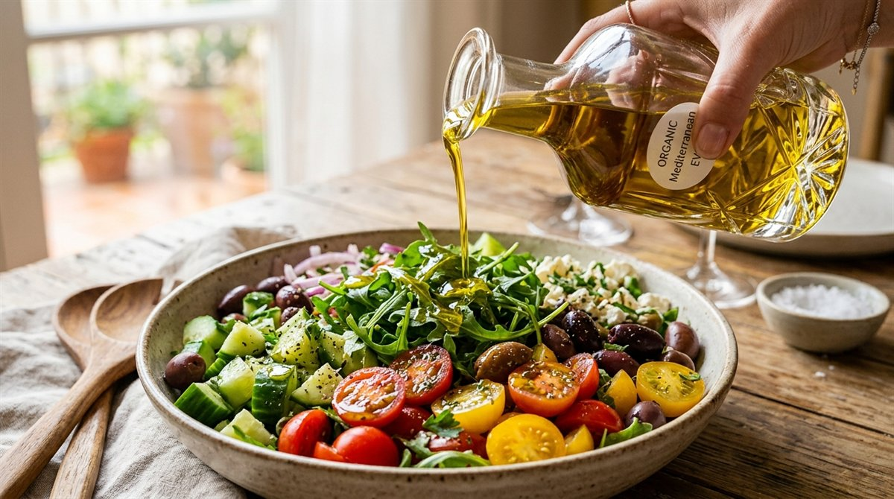
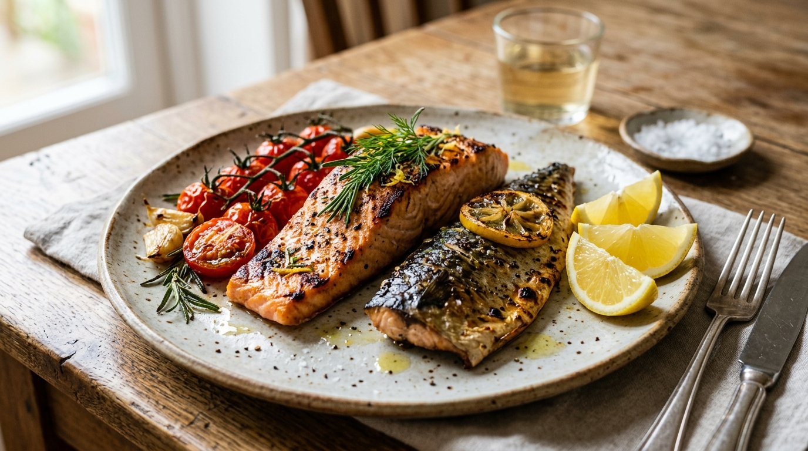
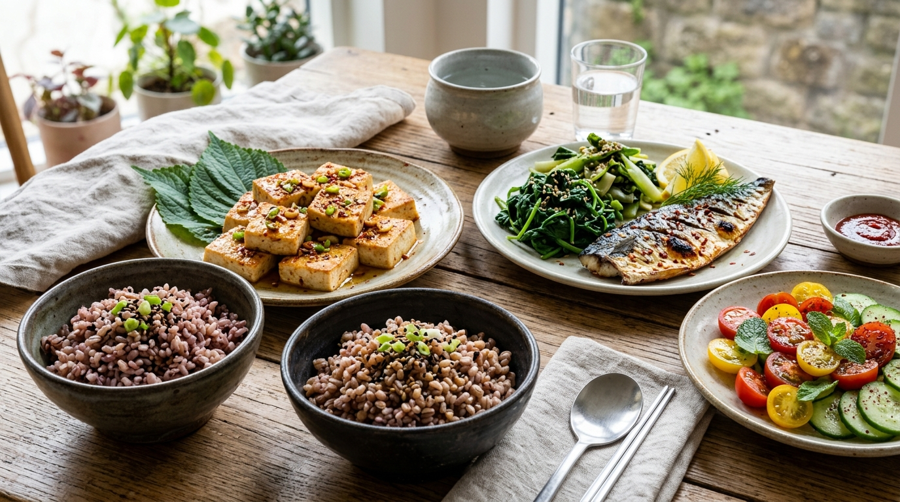
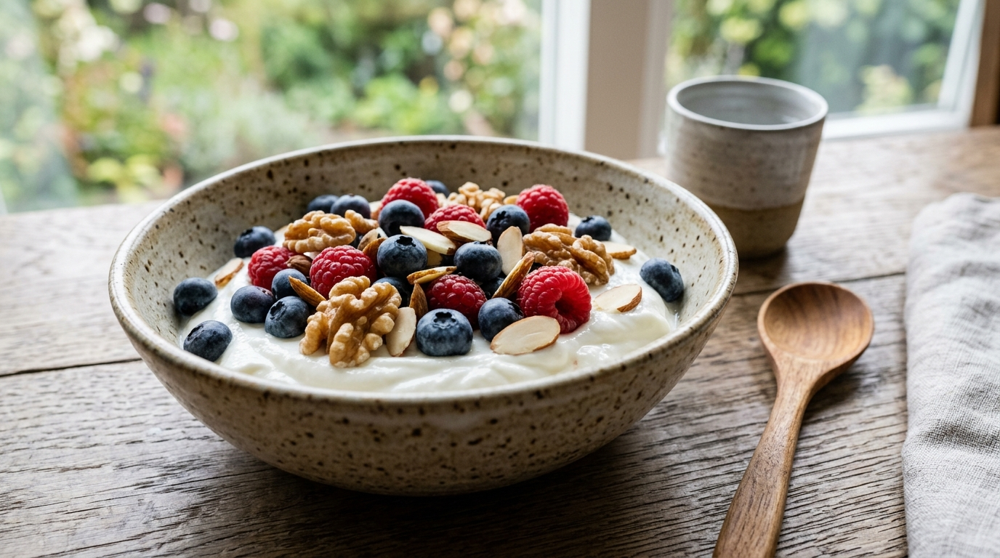

미국 US 뉴스 & 월드 리포트(U.S. News & World Report)가 전 세계 의학·영양학 전문가들과 함께 선정한 '세계 최고의 건강 식단(Best Overall Diet)' 부문에서 8년 연속 압도적 1위를 차지한 식단은 단연 지중해식 식단(Mediterranean Diet)입니다.
그리스 크레타섬과 이탈리아 남부 주민들의 전통 식문화에서 유래한 이 식단은 극단적으로 굶는 다이어트가 아닙니다.
심혈관 질환 사망률 30% 감소, 뇌졸중 위험 39% 저하, 2형 당뇨 예방 및 치매 위험 완화라는 놀라운 의학적 혜택을 제공하는 '평생 지속 가능한 최고의 웰빙 라이프스타일'입니다.
비싼 해외 수입 식재료나 아보카도 없이도, 우리 동네 마트에서 저렴하게 구할 수 있는 고등어, 들기름, 두부, 현미를 활용해 한국인의 밥상에 완벽하게 녹여내는 한국형 지중해식 식단법과 7일 식단표, FAQ 5선을 상세히 안내해 드립니다.
1. 지중해식 식단 피라미드의 4단계 구조와 핵심 원리
지중해식 식단의 기본 구조는 하버드 공공보건대학원과 세계보건기구(WHO)가 정립한 '지중해식 식단 피라미드'에 명확히 나타나 있습니다.

2. 식단의 심장: 엑스트라 버진 올리브유(EVOO)의 비밀
지중해식 식단에서 전체 칼로리의 약 35~40%는 지방에서 오지만, 혈관을 막는 포화지방이 아닌 단일불포화지방산(올레산, Oleic Acid)이 풍부한 **'엑스트라 버진 올리브유(EVOO)'**가 주를 이룹니다.
특히 최상급 올리브유에 함유된 천연 페놀 화합물인 '올레오칸탈(Oleocanthal)'은 체내 염증을 억제하는 천연 소염제 역할을 하며, LDL 나쁜 콜레스테롤의 산화를 막아 동맥경화와 혈전을 원천 차단합니다.
올리브유는 가열하지 않고 샐러드나 완성된 요리 위에 생으로 1~2큰술 둘러 드실 때 항산화 성분을 100% 흡수할 수 있습니다.

3. 한국 마트에서 끝내는 100% 가성비 대체 장보기 팁
비싼 아티초크, 퀴노아, 바질 페스토가 없어도 한국 식재료로 완벽한 'K-지중해식 식단'을 구성할 수 있습니다.
들기름은 식물성 오메가-3(알파 리놀렌산)가 60% 이상으로 혈관 노폐물 배출에 탁월합니다.
가성비가 뛰어나며 신선한 EPA/DHA 함량이 수입 연어보다 풍부합니다.
식물성 이소플라본과 고단백을 채워주는 한국 식탁 최고의 대체 단백질입니다.
밥을 지을 때 백미 비율을 낮추고 잡곡을 40% 이상 배합하여 혈당 스파이크를 예방합니다.
향긋한 한국 제철 나물은 강력한 항산화 파이토케미컬과 비타민을 공급합니다.

4. 지중해식 vs 일반 서구식 식단 영양 & 건강 지표 비교표
지중해식 식단과 정제 탄수화물·가공육 중심의 일반 서구식 식단의 영양 성분 및 혈관 지표 차이입니다.
| 영양 & 건강 지표 | 지중해식 식단 | 일반 서구식 식단 | 기대 건강 개선 효과 |
|---|---|---|---|
| 주요 지방 공급원 | 올리브유 · 들기름 · 견과류 | 버터 · 마가린 · 팜유 · 육류지방 | 혈관 내벽 염증 40% 감소 |
| 단백질 급원 | 등푸른생선 · 두부 · 가금류 | 소고기 · 가공육(햄, 소시지) | 심혈관 질환 위험 30% 저하 |
| 일일 식이섬유량 | 35g 이상 (풍부) | 15g 이하 (부족) | 장내 유익균 증가 & 인슐린 감수성 개선 |
| 혈중 지질 변화 | LDL 콜레스테롤 감소, HDL 증가 | 중성지방 상승, LDL 산화 증가 | 동맥경화 및 뇌졸중 위험 예방 |
5. 실패 없는 한국형 지중해식 5대 실천 체크리스트
일상에서 당장 오늘 저녁부터 장바구니에 담아야 할 5가지 실천 수칙입니다.
매 끼니 쌈채소, 파프리카, 나물, 브로콜리 등 다채로운 색상의 채소를 풍성하게 담습니다.
고등어, 삼치, 꽁치를 에어프라이어에 굽고 레몬즙을 뿌려 간편하고 담백하게 섭취합니다.
정제 대두유 대신 엑스트라 버진 올리브유와 생들기름을 생식으로 드레싱해 드세요.
과자나 빵 대신 무가당 요거트에 호두, 아몬드, 블루베리를 얹어 건강한 간식을 즐깁니다.
소시지, 탄산음료, 정제 설탕 음식을 식탁에서 퇴출하고 자연의 맛을 천천히 음미합니다.

자주 묻는 질문 (FAQ)
* 유네스코(UNESCO) 지중해식 식생활 문화 보고서

독자 댓글 (0)